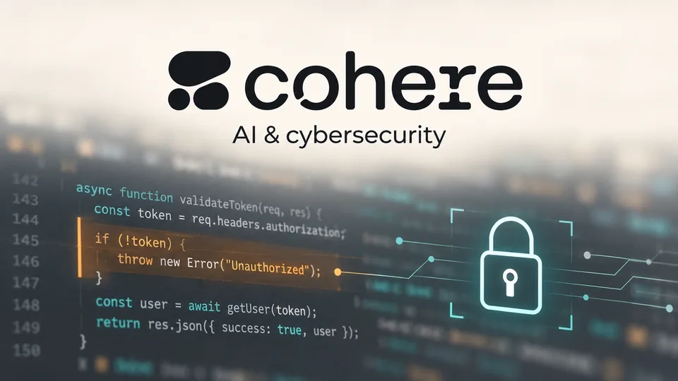

Cohere Signs AISLE Acquisition Letter as AI Security Moves Into the Model Stack
The proposed deal would bring autonomous vulnerability research closer to Cohere’s model development. Finding a bug and safely deploying its fix remain different tasks.

Cohere and cybersecurity startup AISLE announced a letter of intent on October 15 for Cohere to acquire AISLE, bringing automated vulnerability research closer to the development of enterprise AI models. The companies described a proposed transaction. They did not announce that the acquisition had closed, and Reuters reported that financial terms were not disclosed.
The move addresses a practical problem for businesses adopting more capable AI systems: the software they depend on still needs to be examined, patched and operated safely. A model that can produce useful code creates value only if the surrounding process can distinguish a valid fix from a change that introduces a new failure.
A proposed integration, with a specific security focus
Cohere said AISLE’s work would support security and threat detection, monitoring of agents and deployment in private or isolated environments. AISLE said its Prague headquarters would become Cohere’s Prague office when the transaction completes. Those are announced intentions, rather than evidence that every integration is already available to customers.
Cohere also cited more than 500 previously unknown vulnerabilities assigned CVEs across more than 100 codebases in AISLE’s first year. The figure is a company-reported record of discoveries; it is not a measurement of every flaw in those projects or the proportion an automated system would find in a new customer’s software.
The commercial proposition is more specific than adding a generic chatbot to a security dashboard. It is to combine model capability with the systems needed to search code, validate a suspected problem and help produce a remedy. The proposed acquisition makes that combination part of Cohere’s platform strategy.
Discovery is the beginning of the operational job
A vulnerability finding has to be reproducible and relevant. A plausible explanation from a model is not enough if a maintainer cannot confirm the underlying defect. An automated process can generate a large volume of findings while leaving a human team with a larger verification queue.
The next step is harder still: fixing a defect without breaking the behavior people rely on. A patch may remove one unsafe operation while changing compatibility, performance or a public interface. Those tradeoffs make testing and review part of the product’s value, rather than administrative work that can be assumed away.
For a hypothetical payments application, a security change that prevents valid transactions would create a different operational problem. The aim is not simply to minimize the number of warnings. It is to reduce exposure while preserving the required function of the system. That example does not describe an AISLE customer or a reported product defect.
Deployment control will influence the business case
Enterprises also need to decide which source code, credentials and production systems an automated reviewer can access. Private deployment can change where processing takes place, but the customer still has to define permissions, review outputs and manage updates.
Evidence from a purchase evaluation should therefore include confirmed findings, the time required to validate them and the work needed to put fixes into use. A faster first scan is useful, but it is not the same as a shorter path to a safely deployed patch.
Cohere’s announcement puts cybersecurity closer to the center of its enterprise offering. The proposed deal’s value will depend on whether that proximity improves verified results for customers. The immediate news is the acquisition letter; the next test is the combination’s delivery, not the ambition expressed around it.
Sources (3)
For informational purposes. This article is not investment advice.